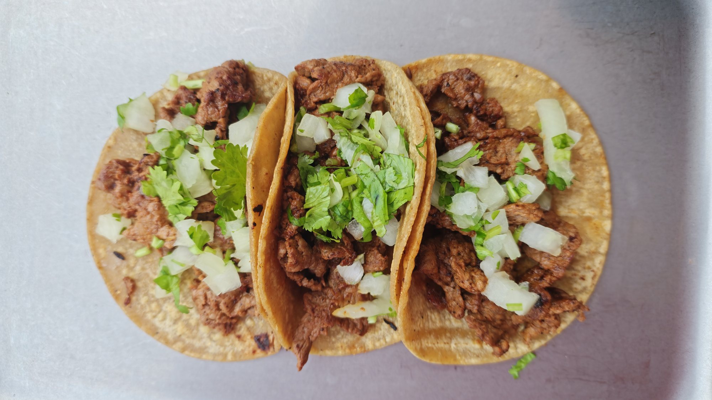
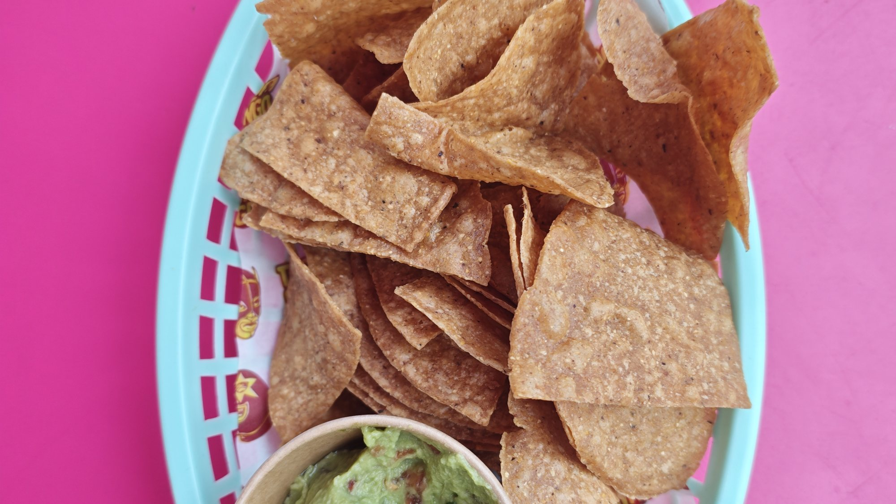
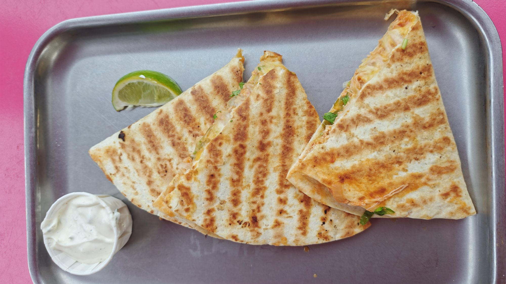
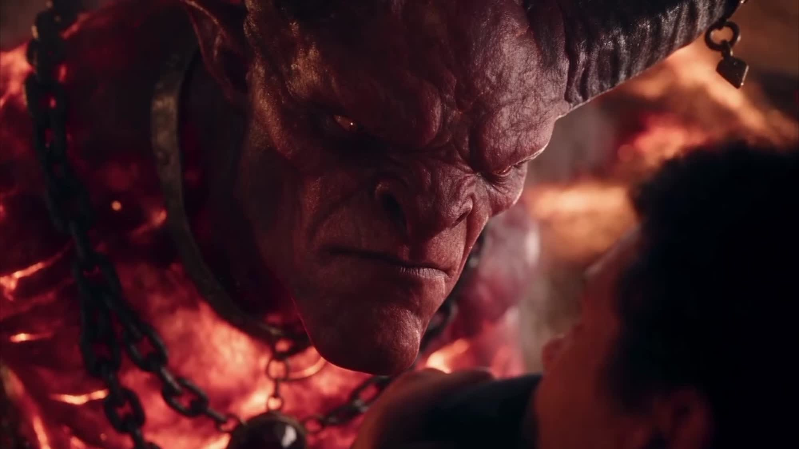

Work — 03 / Food
2026 · 00:15
Hermanos Tacos
Fifteen seconds, vertical, sound off: a taco is dipped, lifted and eaten before the viewer has decided to keep watching.
Brief A fifteen-second vertical film for a Mexican street-food brand: the taco, the dip, the hand.
At a glance
- Client
- Hermanos Tacos
- Status
- Client
- Year
- 2026
- Runtime
- 00:15
- Format
- 9:16
- Role
- Direction, edit
01 — Brief
Vertical, silent, hungry
The film had to work as a paid social cut with no sound and no text for the first two seconds. That rules out a logo open and a talking head — the food has to be the first frame and the whole argument.
Deliverables were one 15-second master and a set of stills for the menu and the truck wrap.
02 — Direction
Macro, hands, one light
Everything is shot close enough that the frame is mostly texture: tortilla, consommé, onion, steam. Black gloves keep the hands neutral and stop the eye from reading a person instead of the food.
A single hard source from the side keeps the highlights wet and the background black, so the cut holds up on a phone at half brightness.
If the first frame is not food, the scroll has already won.
03 — Cut
Three moves, no wasted frames
Dip, lift, bite. Each beat gets its own shot and none of them repeat. The last frame is the plate, held long enough to read as a menu item rather than an ending.



Credits — call sheet
- Client
- Hermanos Tacos
- Direction
- Eluwade Tunmise
- Edit
- Eluwade Tunmise
- Sound
- Eluwade Tunmise
- Grade
- Studio LUT
- Runtime
- 00:15
- Format
- 9:16 vertical
Next — 04 / 12

Film · 2026
CLICK
A late-night session that turns into a negotiation.